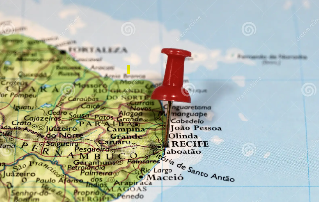
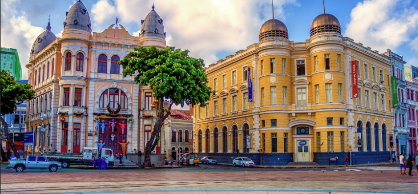
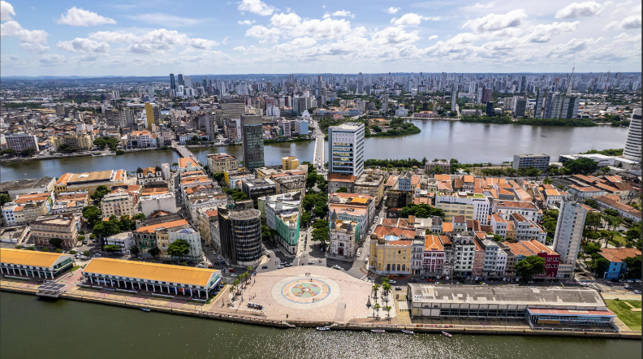
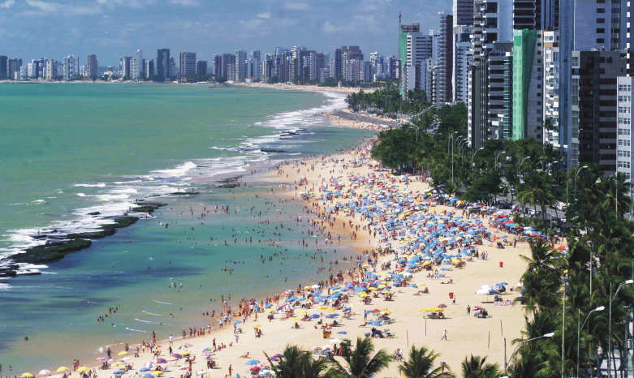

Aqui você encontrará informações sobre uma cidade encantadora!
Venha com a gente descobrir essa maravilha do litoral brasileiro
Recife é a capital do estado de Pernambuco e localiza-se na costa nordestina do litoral brasileiro. Possui um clima tropical fortemente influenciado pela umidade proveniente do oceano. A história da cidade está atrelada ao processo de colonização brasileiro. O município sofreu ainda, durante o Brasil Colônia, uma invasão de tropas holandesas. Os invasores contribuíram para a consolidação da estrutura urbana local.
O povoamento da cidade de Recife está diretamente relacionado à ocupação da costa brasileira pelas forças portuguesas a partir do processo de colonização. A chegada dos portugueses culminou na ocupação e construção dos primeiros equipamentos urbanos no território recifense. Porém, Recife era apenas uma pequena vila de pescadores e dependia de Olinda, núcleo urbano muito mais desenvolvido da época.
O crescimento da cidade de Recife ocorreu de fato a partir da invasão holandesa na cidade. O domínio holandês do território recifense durou entre 1637 e 1654, período no qual houve uma forte expansão de Recife, por meio da construção de equipamentos de infraestrutura urbana pelos invasores.
A cidade de Recife apresenta uma das infraestruturas mais modernas dentre as capitais nordestinas. O desenvolvimento da infraestrutura local iniciou-se desde o processo de colonização brasileira, quando uma invasão holandesa na região resultou na construção dos primeiros equipamentos públicos. Na atualidade, Recife conta com uma ampla rede de transportes intramunicipais, com destaque para o sistema de metrô e trens urbanos. O município possui ainda um porto de grande porte, responsável pela comercialização de produtos da costa nordeste brasileira, assim como um aeroporto internacional, que realiza a ligação da cidade com outras regiões do Brasil e do mundo.
Com clima tropical, praias de águas límpidas, frutas frescas e comida da melhor qualidade. Além de excelente infra estrutura hoteleira, Recife se apresenta como um dos destinos preferidos para passar férias com a família!
Embarque com a gente e venha descobrir os encantos desta cidade alegre e hospitaleira!